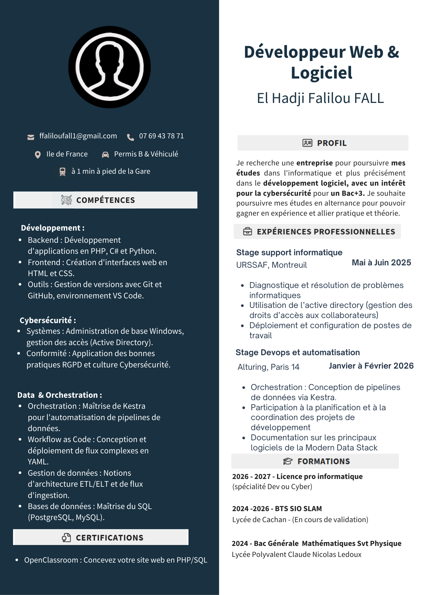

À propos de moi
Mon parcours, mes compétences et mes objectifs professionnels
Je m'appelle Falilou FALL, étudiant en 2ème année de BTS SIO option SLAM au lycée Polyvalent de Cachan. Au fil de ma formation, je me suis spécialisé dans le développement d'applications logicielles et web, avec un intérêt particulier pour la cybersécurité.
Au cours de ma formation, j'ai eu l'opportunité de développer des projets concrets : une application web de gestion sous Laravel et une application en C# WindowsForms. Ces projets m'ont permis de maîtriser des technologies modernes et de comprendre les enjeux réels du développement logiciel en entreprise.
J'ai également effectué deux stages professionnels : un premier à l'URSSAF où j'ai travaillé dans le service du support informatique et l'administration Active Directory, et un second chez Alturing où j'ai mis en place une Modern Data Stack grace au logiciel d'orchestration de données Kestra, une base de données PostgreSQL et Metabase pour la visualisation, le tout en utilisant la méthode Agile Scrum.
J'ai aussi réalisée une veille technologique régulière sur les thématiques du Zero Trust et de la cybersécurité avancée, afin de rester informé des évolutions du secteur.
📘 Le BTS SIO — Services Informatiques aux Organisations
Le BTS SIO (Services Informatiques aux Organisations) est un diplôme de niveau Bac+2 qui forme des techniciens supérieurs capables de répondre aux besoins informatiques des entreprises. Il se décline en deux options : SISR (infrastructures et réseaux) et SLAM (solutions logicielles et applications métier).
L'option SLAM — Solutions Logicielles et Applications Métier forme des développeurs capables de concevoir, développer et maintenir des applications informatiques adaptées aux besoins des organisations. Les étudiants y acquièrent des compétences en développement web (PHP, HTML/CSS), en développement d'applications desktop et mobiles (C#, .NET), en gestion de bases de données relationnelles (SQL, MySQL), ainsi qu'en cybersécurité applicative.
La formation alterne entre enseignements théoriques, ateliers de professionnalisation (AP) et périodes de stage en entreprise, permettant aux étudiants d'acquérir une expérience professionnelle concrète dès le début de leur parcours. À l'issue du BTS SIO SLAM, les diplômés peuvent intégrer directement le marché du travail en tant que développeurs, ou poursuivre leurs études en Licence Professionnelle, Bachelor ou 3e année de BUT informatique.
🛠️ Compétences techniques
🎯 Compétences transversales
Mon CV
Curriculum Vitae
